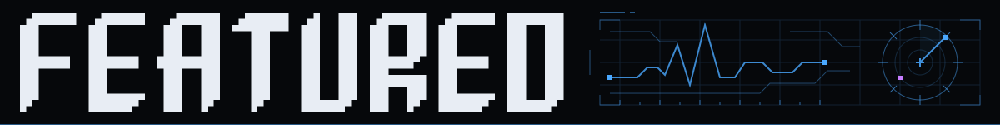

Explore interactive previews inspired by the widgets, then click through to each real plugin.
One person's collection, built in the open by Fred Nix. Not an official Omarchy project.

Two flagships and a family of six built on one idea.
Not bar plugins. The programs the plugins stand on, and the ones that carry a machine from one box to the next.
One so far. The shape is here for the rest.
Things that were replaced. Left here on purpose, because a catalogue where nothing ever dies is not a catalogue.